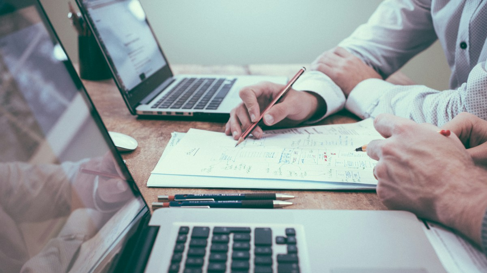
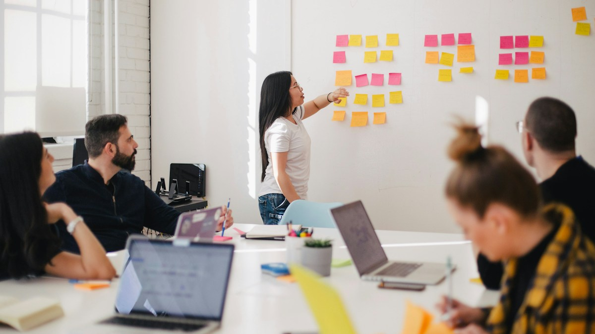
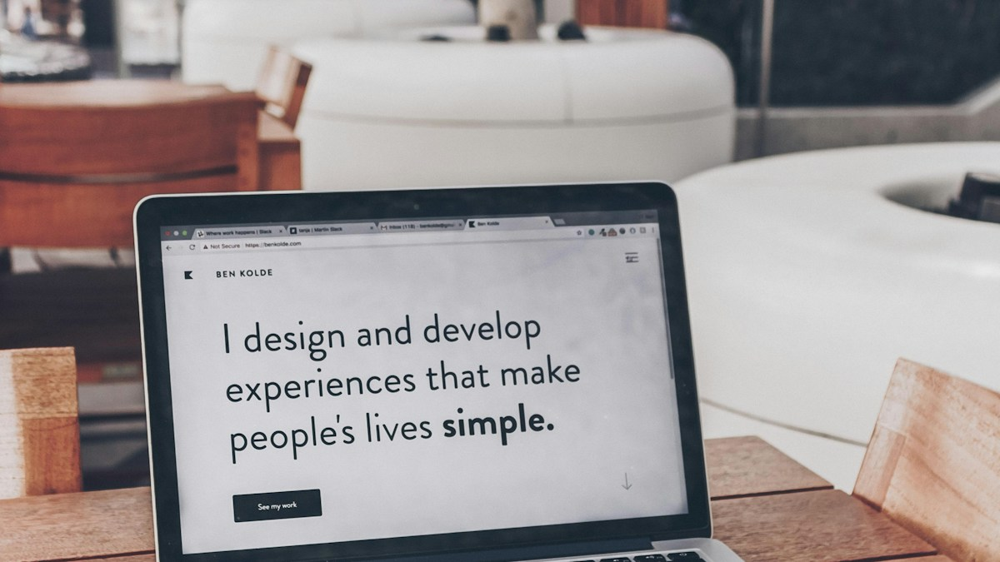
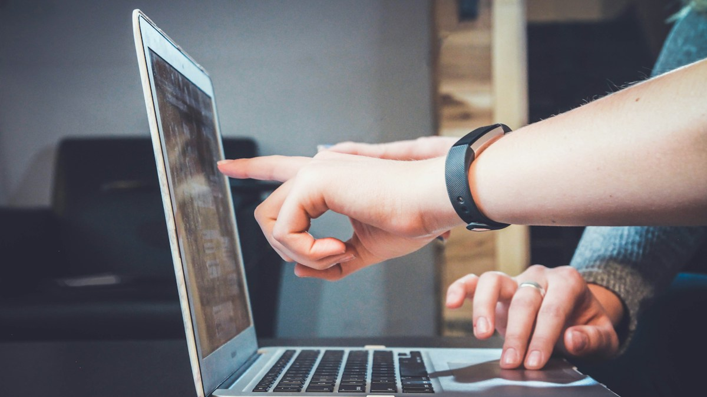
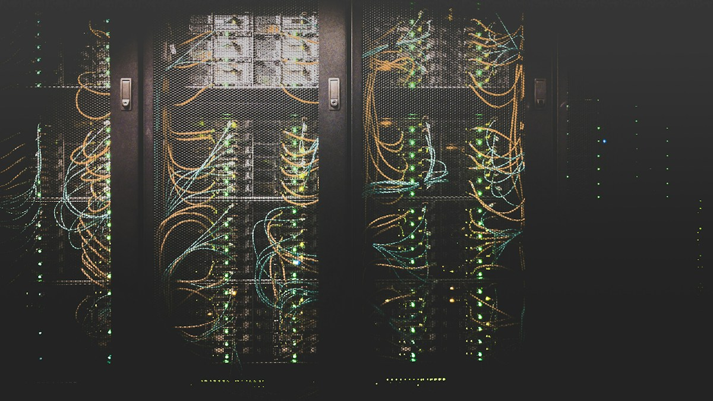

Comunicación inicial
El equipo se reúne con el cliente para entender su necesidad.
Se realiza la toma de contacto, entrevistas y reuniones preliminares para acordar los objetivos generales del proyecto.
Tu lugar en
APRENDE · EXPLORA · CONSTRUYE · TU FUTURO
Más que una carrera, es una forma de crear el mundo que imaginas ♥

Metodología y fundamentos
Un producto de software no aparece por arte de magia. Es el resultado de un proceso ordenado y disciplinado llamado ciclo de vida del software. A continuación exploramos sus fundamentos y sus 8 fases esenciales.
Toca o haz clic en cualquier tarjeta para ver el detalle de cada fase.
El equipo se reúne con el cliente para entender su necesidad.
Se realiza la toma de contacto, entrevistas y reuniones preliminares para acordar los objetivos generales del proyecto.

Evaluación técnica, económica y operativa del proyecto.
Se analiza si la solución propuesta es realizable con los recursos, tiempos y presupuesto disponibles antes de invertir más esfuerzo.

Definición detallada de lo que debe hacer el sistema.
El analista documenta los requerimientos funcionales y no funcionales, reglas de negocio y casos de uso necesarios.

Arquitectura del software, base de datos e interfaz visual.
Se planifica la estructura interna, los modelos de datos y las maquetas de pantallas antes de escribir código.
Traducción del diseño a código fuente ejecutable.
Los desarrolladores escriben el código utilizando lenguajes de programación, patrones y buenas prácticas.

Detección y corrección de errores antes del lanzamiento.
Los testers ejecutan pruebas unitarias, de integración y de usuario para garantizar la calidad del sistema.

Puesta en producción del software en servidores o dispositivos.
El sistema se instala en el entorno real de uso y se capacita a los usuarios finales.
Soporte continuo, parches de seguridad y mejoras futuras.
El software se actualiza constantemente para corregir detalles y añadir nuevas funciones con el tiempo.
Aprende y repasa las etapas del ciclo de vida del software con estos recursos audiovisuales recomendados.
Explicación clara de las etapas esenciales desde la idea hasta el mantenimiento.
Recorrido paso a paso por los modelos y fases clave para estudiantes de software.
Responde a este mini quiz de 5 preguntas sobre el ciclo de vida del software y compite por los mejores puntajes.
Escribe tu nombre completo antes de iniciar. Cada estudiante puede realizar el quiz una sola vez para registrar su puntaje en la tabla de líderes.
Clasificación de estudiantes que han completado el reto.
| Posición | Estudiante | Aciertos | Fecha |
|---|---|---|---|
| Cargando tabla de líderes... | |||